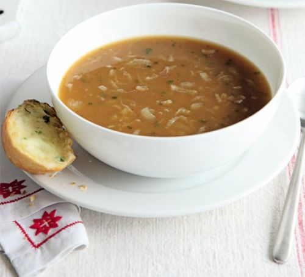

Løksuppe m/ ostesmørbrød
2 Ss smør
1 Ss olivenolje
3 Hvitløksfedd
4 Gule løk
3 Sjalottløk
150 Gr vårløk
1 L kylling- eller kjøttkraft
1.Sett en tykkbunnet kjele på lav varme med smør, olivenolje, salvieblader og finhakket hvitløk. Rør om og tilsett gul løk, sjalottløk og vårløk. Sett på et lokk med en liten glippe åpen og la det putre i 30 minutter til løken er myk, men uten særlig farge..
2.Fjern lokket og stek løken mør og gyllen i ytterligere 20–30 minutter samtidig som du rører jevnlig. Ikke forhast denne prosessen ved å skru opp temperaturen – løken må stekes langsomt for å bli karamellisert og ikke bli brent.
3.Tilsett kraft, gi det et oppkok og la småkoke i 10–15 minutter. Smak til med salt og nykvernet pepper.
